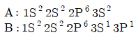
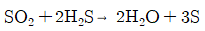
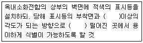
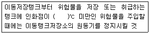

위험물산업기사 (2018-04-28 기출문제)
1과목: 일반화학
1. A 는 B 이온과 반응하나 C 이온과는 반응하지 않고, D는 C 이온과 반응한다고 할 때 A, B, C, D 의 환원력 세기를 큰 것부터 차례대로 나타낸 것은? (단, A, B, C, D는 모두 금속이다.)
- A ＞ B ＞ D ＞ C
- D ＞ C ＞ A ＞ B
- C ＞ D ＞ B ＞ A
- B ＞ A ＞ C ＞ D
(정답률: 84%)

2. 1패러데이(Faraday)의 전기량으로 물을 전기분해 하였을 때 생성되는 기체 중 산소 기체는 0℃, 1기압에서 몇 L 인가?
- 5.6
- 11.2
- 22.4
- 44.8
(정답률: 74%)
3. 메탄에 직접 염소를 작용시켜 클로로포름을 만드는 반응을 무엇이라 하는가?
- 환원반응
- 부가반응
- 치환반응
- 탈수소반응
(정답률: 87%)
4. 다음 물질 중 감광성이 가장 큰 것은?
- HgO
- CuO
- NaNO3
- AgCl
(정답률: 78%)
5. 다음 중 산성 산화물에 해당하는 것은?
- BaO
- CO2
- CaO
- MgO
(정답률: 81%)
6. 배수비례의 법칙이 적용 가능한 화합물을 옳게 나열한 것은?
- CO, CO2
- HNO3, HNO2
- H2SO4, H2SO3
- O2, O3
(정답률: 73%)
7. 엿당을 포도당으로 변화시키는데 필요한 효소는?
- 말타아제
- 아밀라아제
- 지마아제
- 리파아제
(정답률: 75%)
8. 다음 중 가수분해가 되지 않는 염은?
- NaCl
- NH4Cl
- CH3COONa
- CH3COONH4
(정답률: 59%)
9. 다음의 반응 중 평형상태가 압력의 영향을 받지 않는 것은?
- N2+O2↔2NO
- NH3+HCl↔NH4Cl
- 2CO+O2↔2CO2
- 2NO2↔N2O4
(정답률: 60%)
10. 공업적으로 에틸렌을 PdCl2촉매하에 산화시킬 때 주로 생성되는 물질은?
- CH3OCH3
- CH3CHO
- HCOOH
- C3H7OH
(정답률: 67%)
11. 다음과 같은 전자배치를 갖는 원자A와 B에 대한 설명으로 옳은 것은?

- A와 B는 다른 종류의 원자이다.
- A는 홑원자이고, B는 이원자 상태인 것을 알 수 있다.
- A와 B는 동위원소로서 전자배열이 다르다.
- A에서 B로 변할 때 에너지를 흡수한다.
(정답률: 67%)
12. 1N-NaOH 100mL수용액으로 10wt% 수용액을 만들려고 할 때의 방법으로 다음 중 가장 적합한 것은?
- 36mL의 증류수 혼합
- 40mL의 증류수 혼합
- 60mL의 수분 증발
- 64mL의 수분 증발
(정답률: 54%)
13. 다음 반응식에 관한 사항 중 옳은 것은?

- SO2는 산화제로 작용
- H2S는 산화제로 작용
- SO2는 촉매로 작용
- H2S는 촉매로 작용
(정답률: 77%)
14. 주기율표에서 3주기 원소들의 일반적인 물리 · 화학적 성질 중 오른쪽으로 갈수록 감소하는 성질들로만 이루어진 것은?
- 비금속성, 전자흡수성, 이온화에너지
- 금속성, 전자방출성, 원자반지름
- 비금속성, 이온화에너지, 전자친화도
- 전자친화도, 전자흡수성, 원자반지름
(정답률: 76%)
15. 30wt%인 진한 HCl의 비중은 1.1 이다. 진한 HCl의 몰농도는 얼마인가? (단, HCl의 화학식량은 36.5 이다.)
- 7.21
- 9.04
- 11.36
- 13.08
(정답률: 56%)
16. 방사성 원소에서 방출되는 방사선 중 전기장의 영향을 받지 않아 휘어지지 않는 선은?
- α 선
- β 선
- r 선
- α, β, r선
(정답률: 84%)
17. 다음 중 산성염으로만 나열된 것은?
- NaHSO4, Ca(HCO3)
- Ca(OH)Cl, Cu(OH)Cl
- NaCl, Cu(OH)Cl
- Ca(OH)Cl, CaCl2
(정답률: 62%)
18. 어떤 기체의 확산 속도는 SO2의 2배이다. 이 기체의 분자량은 얼마인가? (단, SO2의 분자량은 64 이다.)
- 4
- 8
- 16
- 32
(정답률: 78%)
19. 다음 중 물의 끓는점을 높이기 위한 방법으로 가장 타당한 것은?
- 순수한 물을 끓인다.
- 물을 저으면서 끓인다.
- 감압하에 끓인다.
- 밀폐된 그릇에서 끓인다.
(정답률: 81%)
20. 한 분자 내에 배위결합과 이온결합을 동시에 가지고 있는 것은?
- NH4Cl
- C6H6
- CH3OH
- NaCl
(정답률: 63%)
2과목: 화재예방과 소화방법
21. 어떤 가연물의 착화에너지가 24cal 일 때, 이것을 일에너지의 단위로 환산하면 약 몇 Joule 인가?
- 24
- 42
- 84
- 100
(정답률: 68%)
22. 위험물제조소등에 옥내소화전설비를 압력수조를 이용한 가압송수장치로 설치하는 경우 압력수조의 최소압력은 몇 MPa인가? (단, 소방용 호스의 마찰손실수두압은 3.2MPa, 배관의 마찰손실수두압은 2.2MPa, 낙차의 환산수두압은 1.79MPa 이다.)
- 5.4
- 3.99
- 7.19
- 7.54
(정답률: 71%)
23. 디에틸에테르 2000L 와 아세톤 4000L를 옥내저장소에 저장하고 있다면 총 소요단위는 얼마인가?
- 5
- 6
- 50
- 60
(정답률: 54%)
24. 연소 이론에 대한 설명으로 가장 거리가 먼 것은?
- 착화온도가 낮을수록 위험성이 크다.
- 인화점이 낮을수록 위험성이 크다.
- 인화점이 낮은 물질은 착화점도 낮다.
- 폭발 한계가 넓을수록 위험성이 크다.
(정답률: 82%)
25. 위험물안전관리법령상 염소산염류에 대해 적응성이 있는 소화설비는?
- 탄산수소염류 분말소화설비
- 포소화설비
- 불활성가스소화설비
- 할로겐화합물소화설비
(정답률: 55%)
26. 분말소화약제의 착색 색상으로 옳은 것은?
- NH4H2PO4 : 담홍색
- NH4H2PO4 : 백색
- KHCO3 : 담홍색
- KHCO3 : 백색
(정답률: 81%)
27. 불활성가스소화설비에 의한 소화적응성이 없는 것은?
- C3H5(ONO2)3
- C6H4(CH3)2
- CH3COCH3
- C2H5OC2H5
(정답률: 56%)
28. 벤젠에 관한 일반적 성질로 틀린 것은?
- 무색투명한 휘발성 액체로 증기는 마취성과 독성이 있다.
- 불을 붙이면 그을음을 많이 내고 연소한다.
- 겨울철에는 응고하여 인화의 위험이 없지만, 상온에서는 액체상태로 인화의 위험이 높다.
- 진한 황산과 질산으로 니트로화 시키면 니트로벤젠이 된다.
(정답률: 76%)
29. 다음은 위험물안전관리법령상 위험물제조소등에 설치하는 옥내소화전설비의 설치표시 기준 중 일부이다. ( )에 알맞은 수치를 차례로 옳게 나타낸 것은?

- 5°, 5m
- 5°, 10m
- 15°, 5m
- 15°, 10m
(정답률: 70%)
30. 벤조일퍼옥사이드의 화재 예방상 주의 사항에 대한 설명 중 틀린 것은?
- 열, 충격 및 마찰에 의해 폭발할 수 있으므로 주의한다.
- 진한 질산, 진한 황산과의 접촉을 피한다.
- 비활성의 희석제를 첨가하면 폭발성을 낮출 수 있다.
- 수분과 접촉하면 폭발의 위험이 있으므로 주의한다.
(정답률: 59%)
31. 전역방출방식의 할로겐화물 소화설비의 분사헤드에서 Halon 1211을 방사하는 경우의 방사압력은 얼마 이상으로 아혀야 하는가?
- 0.1MPa
- 0.2MPa
- 0.5MPa
- 0.9MPa
(정답률: 63%)
32. 이산화탄소 소화약제의 소화작용을 옳게 나열한 것은?
- 질식소화, 부촉매소화
- 부촉매소화, 제거소화
- 부촉매소화, 냉각소화
- 질식소화, 냉각소화
(정답률: 76%)
33. 금속나트륨의 연소 시 소화방법으로 가장 적절한 것은?
- 팽창질석을 사용하여 소화한다.
- 분무상의 물을 뿌려 소화한다.
- 이산화탄소를 방사하여 소화한다.
- 물로 적힌 헝겊으로 피복하여 소화한다.
(정답률: 81%)
34. 이산화탄소소화기에 대한 설명으로 옳은 것은?
- C급 화재에는 적응성이 없다.
- 다량의 물질이 연소하는 A급 화재에 가장 효과적이다.
- 밀폐되지 않은 공간에서 사용할 때 가장 소화효과가 좋다.
- 방출용 동력이 별도로 필요치 않다.
(정답률: 65%)
35. 위험물안전관리법령상 제5류 위험물에 적응성 있는 소화설비는?
- 분말을 방사하는 대형소화기
- CO2를 방사하는 소형소화기
- 할로겐화합물을 방사하는 대형소화기
- 스프링클러설비
(정답률: 72%)
36. 다음 중 자연발화의 원인으로 가장 거리가 먼 것은?
- 기화열에 의한 발열
- 산화열에 의한 발열
- 분해열에 의한 발열
- 흡착열에 의한 발열
(정답률: 75%)
37. 과산화나트륨 저장 장소에서 화재가 발생하였다. 과산화나트륨을 고려하였을 때 다음중 가장 적합한 소화약제는?
- 포소화약제
- 할로겐화합물
- 건조사
- 물
(정답률: 64%)
38. 10℃의 물 2g을 100℃의 수증기로 만드는 데 필요한 열량은?
- 180cal
- 340cal
- 719cal
- 1258cal
(정답률: 61%)
39. 위험물안전관리법령상 마른모래(삽 1개 포함) 50L 의 능력단위는?
- 0.3
- 0.5
- 1.0
- 1.5
(정답률: 76%)
40. 불활성가스 소화약제 중 IG-541 의 구성성분이 아닌 것은?
- N2
- Ar
- Ne
- CO2
(정답률: 82%)
3과목: 위험물의 성질과 취급
41. 위험물안전관리법령상 위험물의 운반에 관한 기준에 따르면 위험물은 규정에 의한 운반 용기에 법령에서 정한 기준에 따라 수납하여 적재하여야 한다. 다음 중 적용 예외의 경우에 해당하는 것은? (단, 지정수량의 2배인 경우이며, 위험물을 동일구내에 있는 제조소등의 상호간에 운반하기 위하여 적재하는 경우는 제외한다.)
- 덩어리 상태의 유황을 운반하기 위하여 적재하는 경우
- 금속분을 운반하기 위하여 적재하는 경우
- 삼산화크롬을 운반하기 위하여 적재하는 경우
- 염소산나트륨을 운반하기 위하여 적재하는 경우
(정답률: 84%)
42. 제4류 위험물인 동식물유류의 취급 방법이 잘못된 것은?
- 액체의 누설을 방지하여야 한다.
- 화기 접촉에 의한 인화에 주의하여야 한다.
- 아마인유는 섬유 등에 흡수되어 있으면 매우 안정하므로 취급하기 편리하다.
- 가열할 때 증기는 인화되지 않도록 조치하여야 한다.
(정답률: 87%)
43. 다음 중 메탄올의 연소범위에 가장 가까운 것은?
- 약 1.4 ~ 5.6vol%
- 약 7.3 ~ 36vol%
- 약 20.3 ~ 66vol%
- 약 42.0 ~ 77vol%
(정답률: 72%)
44. 금속 과산화물을 묽은 산에 반응시켜 생성되는 물질로서 석유와 벤젠에 불용성이고, 표백작용과 살균작용을 하는 것은?
- 과산화나트륨
- 과산화수소
- 과산화벤조일
- 과산화칼륨
(정답률: 70%)
45. 연소범위가 약 2.5 ~ 38.5vol% 로 구리, 은, 마그네슘과 접촉 시 아세틸라이드를 생성하는 물질은?
- 아세트알데히드
- 알킬알루미늄
- 산화프로필렌
- 콜로디온
(정답률: 67%)
46. 제5류 위험물 제조소에 설치하는 표지 및 주의사항을 표시한 게시판의 바탕색상을 각각 옳게 나타낸 것은?
- 표지 : 백색
주의사항을 표시한 게시판 : 백색 - 표지 : 백색
주의사항을 표시한 게시판 : 적색 - 표지 : 적색
주의사항을 표시한 게시판 : 백색 - 표지 : 적색
주의사항을 표시한 게시판 : 적색
(정답률: 61%)
47. 최대 아세톤 150톤을 옥외탱크저장소에 저장할 경우 보유공지의 너비는 몇 m 이상으로 하여야 하는가? (단, 아세톤의 비중은 0.79 이다.)
- 3
- 5
- 9
- 12
(정답률: 39%)
48. 위험물이 물과 접촉하였을 때 발생하는 기체를 옳게 연결한 것은?
- 인화칼슘 - 포스핀
- 과산화칼륨 - 아세틸렌
- 나트륨 - 산소
- 탄화칼슘 - 수소
(정답률: 75%)
49. 다음 위험물 중 물에 가장잘 녹은 것은?
- 적린
- 황
- 벤젠
- 아세톤
(정답률: 64%)
50. 다음 위험물 중 가열 시 분해온도가 가장 낮은 물질은?
- KClO3
- Na2O2
- NH4ClO4
- KNO3
(정답률: 33%)
51. 제5류 위험물 중 니트로화합물에서 니트로기(nitro group)를 옳게 나타낸 것은?
- -NO
- -NO2
- -NO3
- -NON3
(정답률: 76%)
52. 다음 2가지 물질을 혼합하였을 때 그로 인한 발화 또는 폭발의 위험성이 가장 낮은 것은?
- 아염소산나트륨과 티오황산나트륨
- 질산과 이황화탄소
- 아세트산과 과산화나트륨
- 나트륨과 등유
(정답률: 70%)
53. 다음 중 황린이 자연발화하기 쉬운 가장 큰 이유는?
- 끓는점이 낮고 증기의 비중이 작기 때문에
- 산소와 결합력이 강하고 착화온도가 낮기 때문에
- 녹는점이 낮고 상온에서 액체로 되어 있기 때문에
- 인화점이 낮고 가연성 물질이기 때문에
(정답률: 70%)
54. 위험물안전관리법령에 따른 위험물 저장기준으로 틀린 것은?
- 이동탱크저장소에는 설치허가증과 운송허가증을 비치하여야 한다.
- 지하저장탱크의 주된 밸브는 위험물을 넣거나 빼낼 때 외에는 폐쇄하여야 한다.
- 아세트알데히드를 저장하는 이동저장탱크에는 탱크 안에 불활성 가스를 봉입하여야 한다.
- 옥외저장탱크 주위에 설치된 방유제의 내부에 물이나 유류가 괴었을 경우에는 즉시 배출하여야 한다.
(정답률: 66%)
55. 위험물의 저장 및 취급에 대한 설명으로 틀린 것은?
- H2O2 : 직사광선을 차단하고 찬 곳에 저장한다.
- MgO2 : 습기의 존재하에서 산소를 발생하므로 특히 방습에 주의한다.
- NaNO3: 조해성이 있으므로 습기에 주의한다.
- K2O2 : 물과 반응하지 않으므로 물속에 저장한다.
(정답률: 78%)
56. 위험물안전관리법령상 제5류 위험물 중 질산에스테르류에 해당하는 것은?
- 니트로벤젠
- 니트로셀룰로오스
- 트리니트로페놀
- 트리니트로톨루엔
(정답률: 67%)
57. 옥내저장소에서 위험물 용기를 겹쳐 쌓는 경우에 있어서 제4류 위험물 중 제3석유류만을 수납하는 용기를 겹쳐 쌓을 수 있는 높이는 최대 몇 m 인가?
- 3
- 4
- 5
- 6
(정답률: 57%)
58. 연면적 1000m2 이고 외벽이 내화구조인 위험물취급소의 소화설비 소요단위는 얼마인가?
- 5
- 10
- 20
- 100
(정답률: 73%)
59. 다음 중 물에 대한 용해도가 가장 낮은 물질은?
- NaClO3
- NaClO4
- KClO4
- NH4ClO4
(정답률: 42%)
60. 위험물안전관리법령상 다음 ＜보기＞의 ( ) 안에 알맞은 수치는?

- 40
- 50
- 60
- 70
(정답률: 81%)